Fashion plates by decade
Look at the waist, the sleeves and the hat, then check the year. Below is one plate from each decade, 1790s to 1930s, with the cue the game gives for it and its credit.
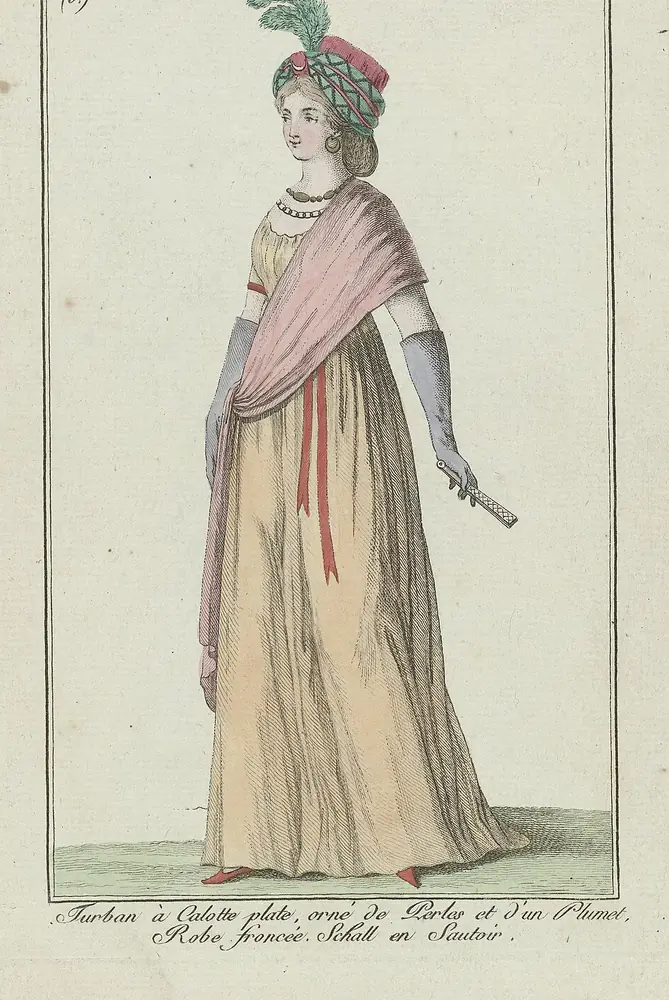
1790s 1797
A rose wrap over a yellow gown and a feathered turban.
Costume Parisien plate, Journal des Dames et des Modes, Rijksmuseum. CC0 1.0.
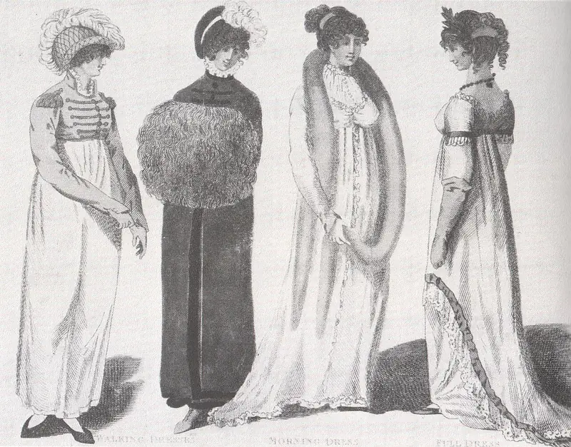
1800s 1804
Four women in slim white gowns with bonnets and a fur wrap.
Four walking dresses, Victoria and Albert Museum print, Victoria and Albert Museum. Public domain.
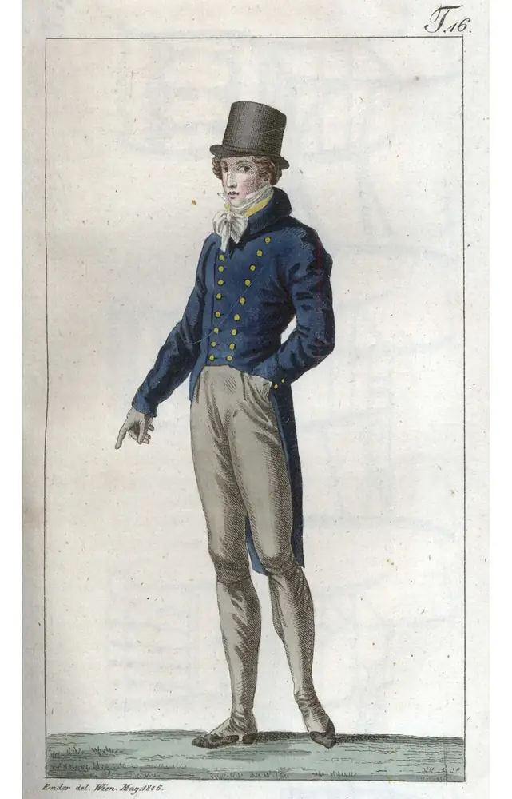
1810s 1815
A blue tailcoat, a striped waistcoat, pale trousers and a tall hat.
Gentleman in Vienna, Journal des Luxus und der Moden. Public domain.
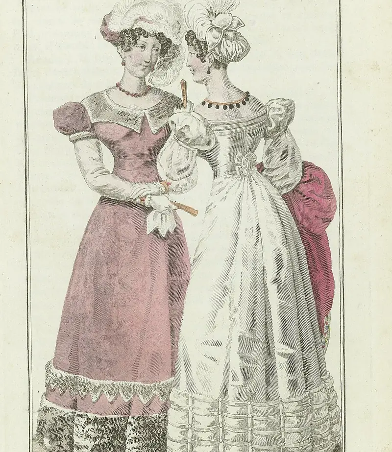
1820s 1824
Two women in pink and white gowns with frothy caps.
Costume Parisien plate, Journal des Dames et des Modes, Rijksmuseum. CC0 1.0.
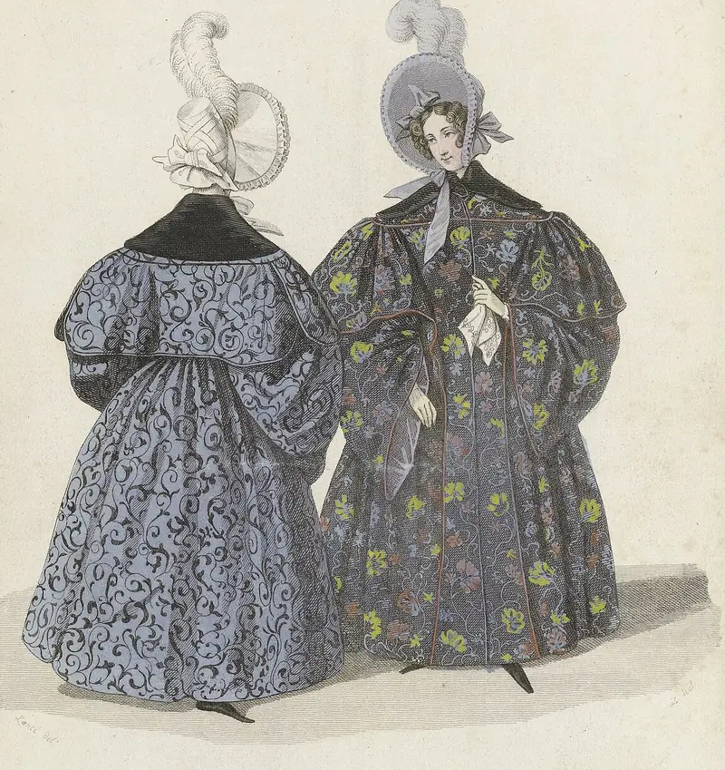
1830s 1834
Puffed sleeves in patterned silk and feathered bonnets.
Plate from the Journal des Dames et des Modes, Rijksmuseum. CC0 1.0.
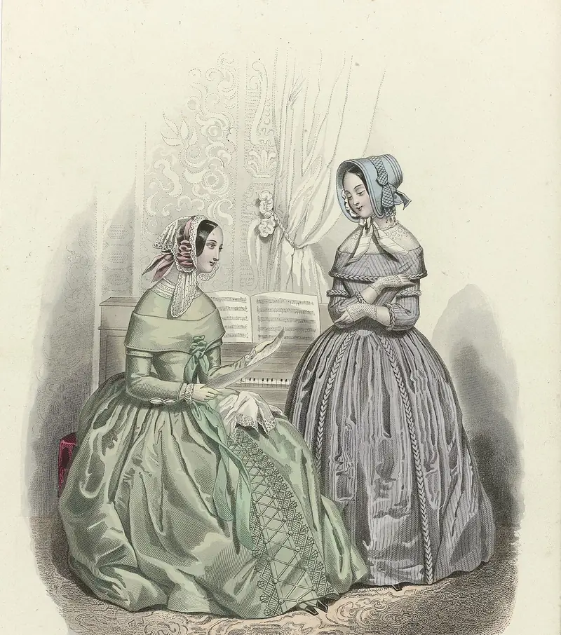
1840s 1845
A green dress and a grey dress with deep bonnets.
Plate from Le Follet, Rijksmuseum. CC0 1.0.
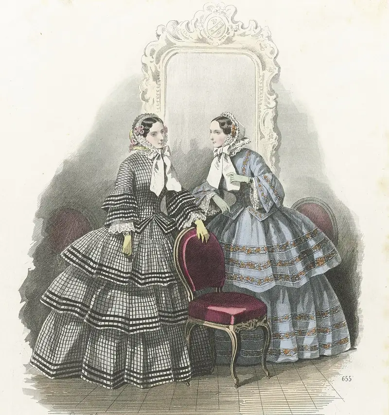
1850s 1855
Two striped dresses with wide skirts beside a red chair.
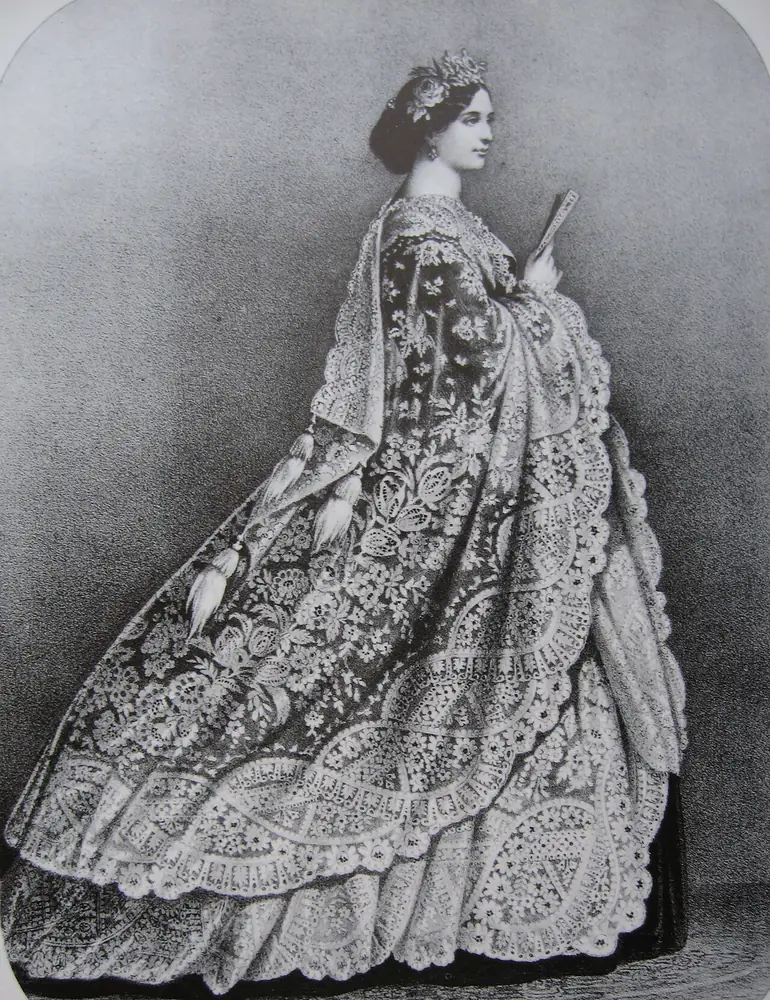
1860s 1865
Hair swept up with a wreath, the skirt pushed back behind.
The immense lace shawl, fashion plate, collection Maciet. Public domain.
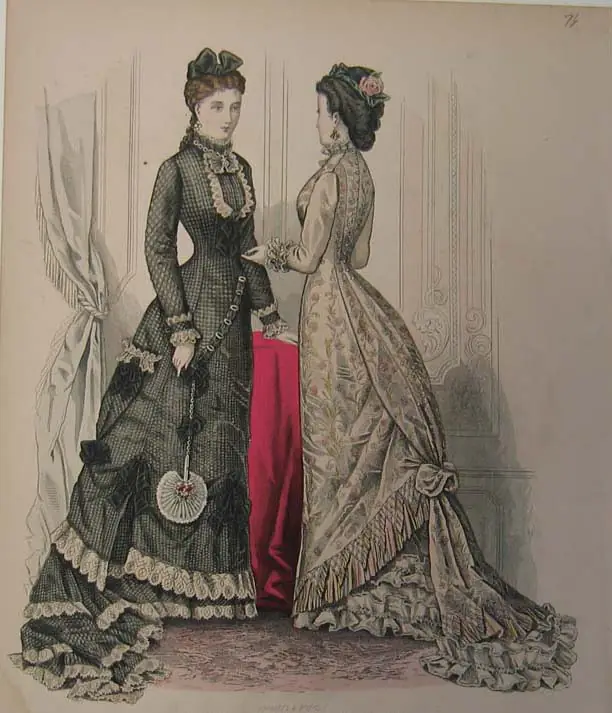
1870s 1876
A dark princess line dress beside a cream gown with a train.
Demorest fashion plate. Public domain.
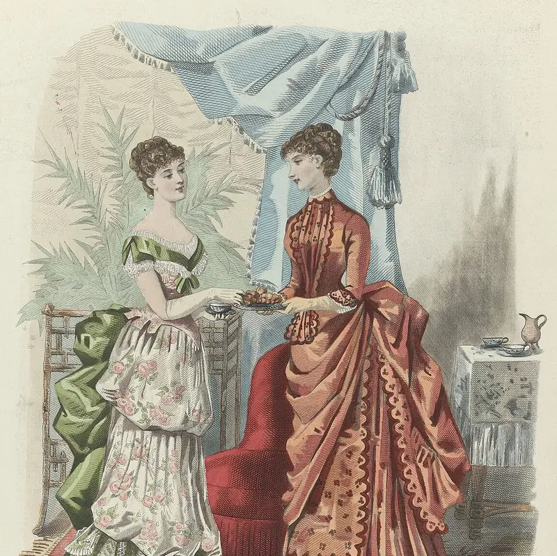
1880s 1884
A rust bustle dress and a white dress with green trim.
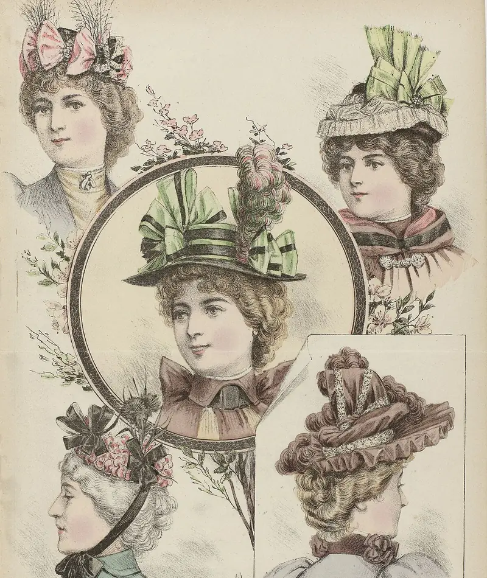
1890s 1895
Wide brimmed hats piled with bows and flowers.
Plate from the Journal des Demoiselles, Rijksmuseum. CC0 1.0.
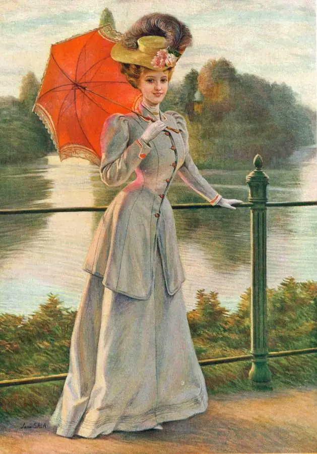
1900s 1905
A grey suit, a huge flowered hat and a red parasol.
High-Life Tailor poster. Public domain.
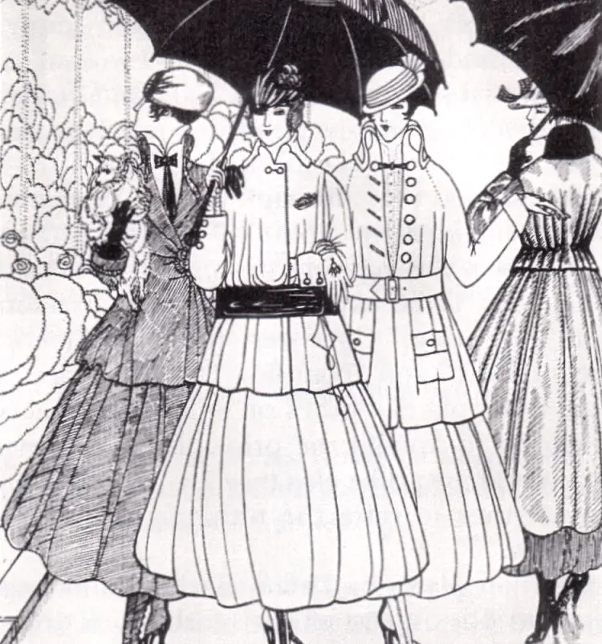
1910s 1915
Full skirts cut above the ankle.
Gazette du Bon Ton plate by Valentine Gross, Valentine Gross (1887–1968). Public domain.
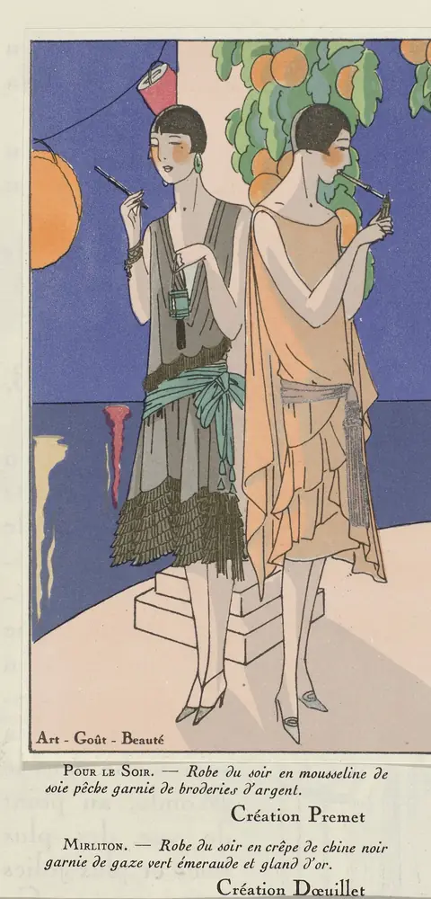
1920s 1926
Knee-grazing fringe dresses and short cropped hair.
Pour le soir and Mirliton, Art - Goût - Beauté, Rijksmuseum. CC0 1.0.
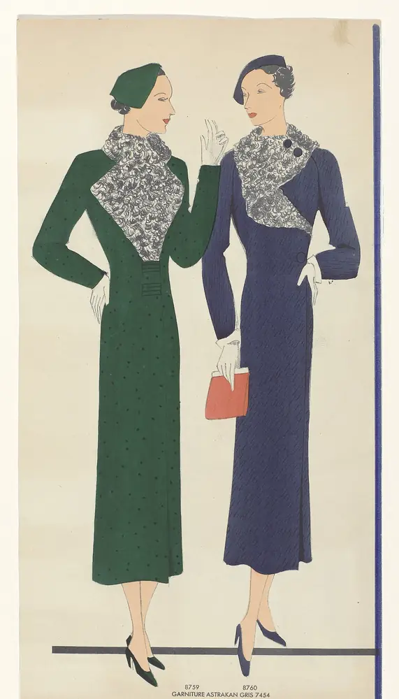
1930s 1935
Long green and navy dresses with curly fur bibs.
Dresses with astrakhan trim, Rijksmuseum print, Rijksmuseum. CC0 1.0.
(bis)_Turban_%C3%A0_Calott_(..),_RP-P-2009-2251.jpg){kind=link}


,_BI-1938-0115A-36.jpg){kind=link}
,_RP-P-OB-103.233.jpg){kind=link}
,_RP-P-2009-3229.jpg){kind=link}

.jpg){kind=link}